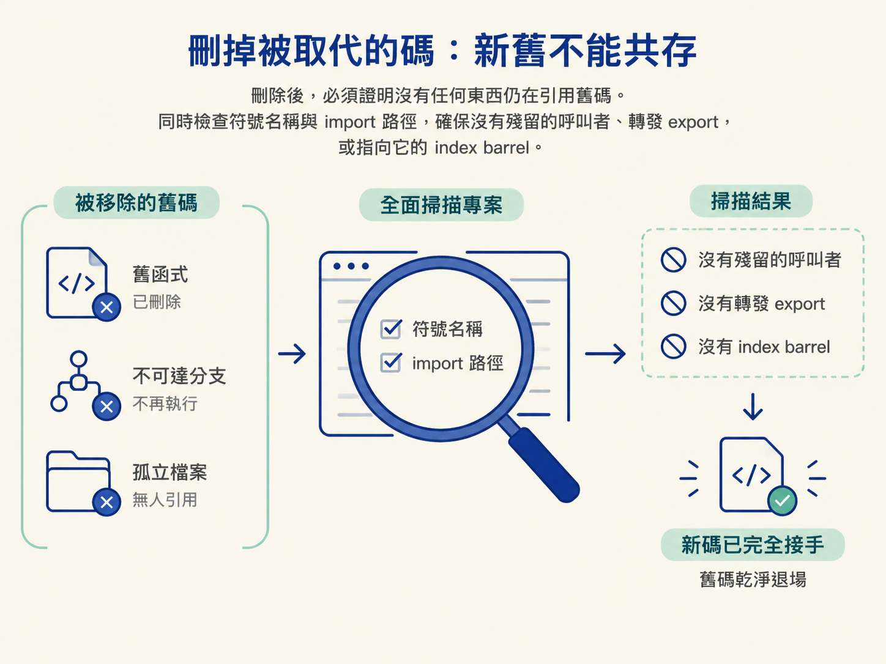
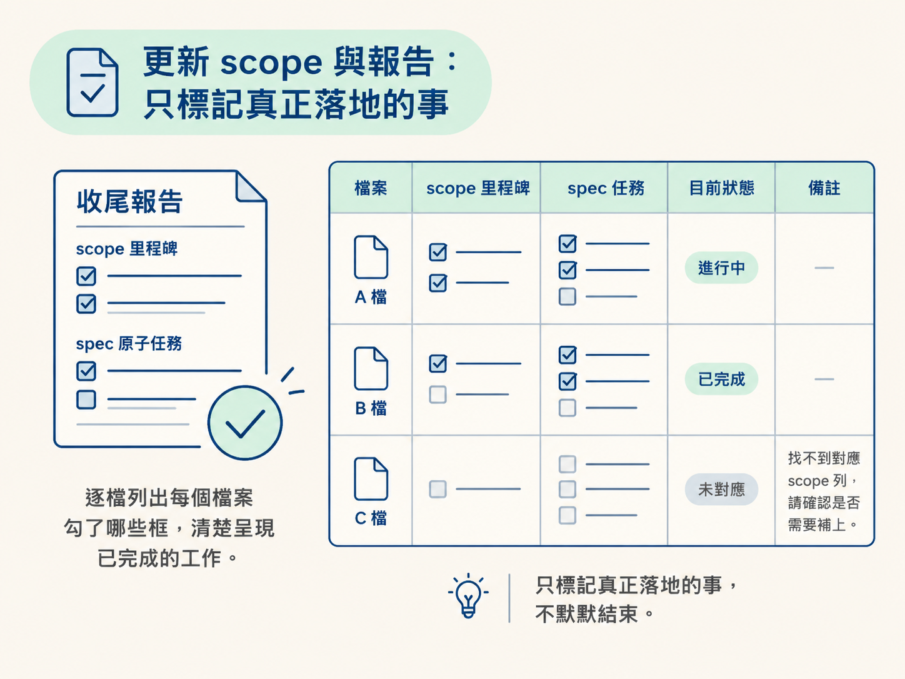
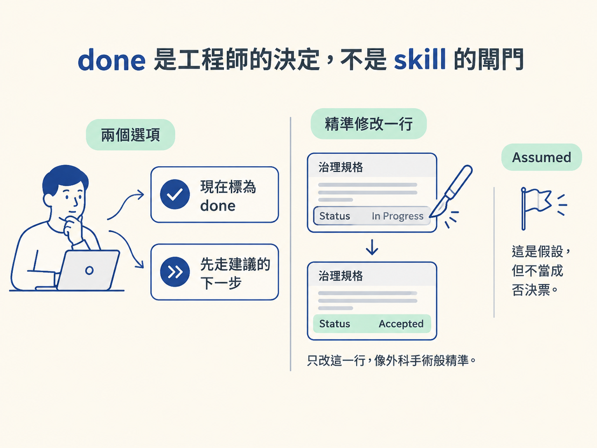
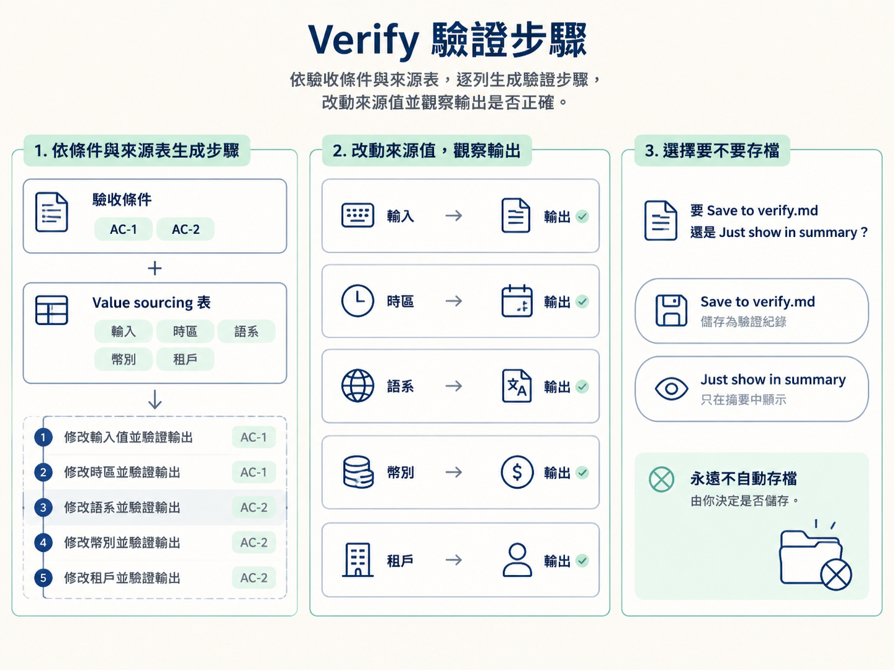
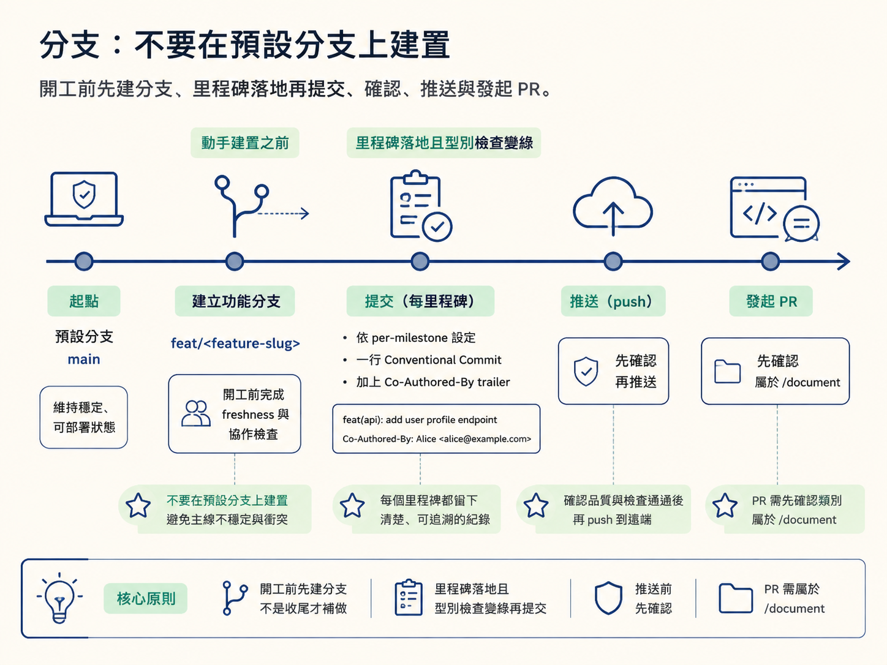

完成建置後，你要能刪乾淨被取代的舊碼，證明沒有任何地方仍在引用它；只更新正確的 scope 與 spec 狀態；產生可執行的 verify 步驟；最後依照 git 政策建立分支與提交。
功能跑起來了，型別檢查也通過，清單上的項目一個個打勾。看起來可以收工，但這正是 `/develop` 最需要保持誠實的時候。
最容易漏掉的有兩件事。第一，舊碼可能還留在原地：新做法已經接手，舊函式、舊分支和孤立檔案卻沒人清理。第二，狀態可能報得太寬鬆：任務只完成一半，scope 卻先被打勾，過了一個月，沒人說得清楚當時究竟完成了什麼。
另外，當最近的 AGENTS.md 要求使用 git 時，還要釐清分支與提交的時機。這些都不是「之後再整理」的小事，而是建置真正完成前的最後幾道閘門。
這條規則同時適用於 UI 軌與 Logical 軌。只要這次建置取代了原本的模式或實作，例如完成重構，或把一種做法換成另一種做法，刪除就屬於這次建置的一部分。
要清掉的包括：
刪除之後還不算完成。你必須證明沒有任何東西仍在引用它。針對每個被移除的符號搜尋整個 codebase，搜尋時同時檢查符號名稱與 import 路徑，確認沒有殘留的呼叫者、轉發用的 export，或指向它的 index barrel。

如果還有程式需要這個符號，表示遷移尚未完成。應該把那個呼叫者也遷移掉，而不是把舊碼留在原地。最後，在舊碼真的移除後，再跑型別檢查、建置與 lint。若出現未使用的 import 或無法解析的引用，那是漏查的訊號，不要把舊碼加回去掩蓋問題。
刪除時機取決於 rollout 的範圍：
唯一例外是規格明確要求保留過渡期，例如使用 feature flag 的遷移或回填視窗。這時要照規格執行，並留下「還剩下什麼要移除、預計什麼時候移除」的註記。
收尾的第一步是確認，不是宣布。開始勾選之前，先確認檔案真的寫入、程式碼真的存在，而且型別檢查已通過。
資料層任務也一樣：migration 必須真的套用，schema 必須確認已上線，不能只停在「migration 檔案已產生」。如果任務被打斷或只完成一半，就維持未勾選，讓功能保持 in-progress，並清楚說明哪裡沒完成、原因是什麼。未驗證或未完成的建置，絕不能標成 done。
勾選層級要分開：
code in <path>。具體來說，規格 ## Build plan 中完成的任務，要在規格內勾選。某個里程碑的規格任務全部完成後，才勾 scope 裡的里程碑子框；所有里程碑完成後，才勾 Build it 框。沒有規格的功能，則直接勾它在 scope 中的 checkbox。
還有一個收尾閘門：報告中要分別列出每個檔案勾了什麼，包括 scope 的框、spec 的任務與目前狀態。如果找不到對應的 scope 列，也要明確說明，不能默默結束。

所有確定落地的項目勾完後，先完成自我檢查：型別檢查或建置要綠；能渲染的畫面要實際看過；migration 要已套用且上線。
完成這些檢查後，不要由 skill 自行宣布完成，而是提出選項：現在標成 done，或先走建議的下一步。
如果功能沒有 Verify it 或 Test it 的框，例如基礎功能、決策加骨架的功能，或 Prototype 建置，done 就是自然的下一步。如果後面還有這些框，就清楚說明它們是建議、可以跳過的下一步。是否設定 done，由工程師決定；跳過的步驟也要誠實記錄為跳過。
另外，Assumed 規格不會阻擋 done。如果建置是根據尚未正式審議的假設完成，就在報告中立旗說明：「這個功能建立在尚未正式審議的決策上，方便時請找 /architect 補審。」旗子要保留，但不把它當成否決票。
工程師將功能標成 done 時，要同步把治理規格的 **Status** 從 In Progress 推進到 Accepted。這個修改必須是外科手術式的：只改那一行。

修改前再讀一次狀態。如果狀態不是 In Progress，例如已經是 Accepted、Superseded 或 Assumed，就立旗提醒，不要覆蓋原本的狀態。
由哪個 skill 設定 done，就由哪個 skill 完成這個鏡射動作。如果工程師在 `/develop` 之後才執行 verify 或 test，則由對應的 skill 更新狀態。
這一步每次都會執行，但永遠不會自動存檔。它會從驗收條件推導出具體的驗證步驟，而且每一步都要綁定對應的 AC-N。
例如：
「進入 /signup、完成註冊，預期被導向 /auth/verify-email，對應 AC-1。」
除了 AC，規格中 Value sourcing 表的每一列也都要各產生一個步驟。因為真正的正確性保證在行為層，規格閘門只是設計期的檢查。
每個步驟都要實際改動該值的來源，例如換一個輸入、時區、語系、幣別或租戶，再觀察輸出是否正確。這能抓到閘門沒攔住的錯誤，例如把錯誤時區算出的日期當成「今天」。

推導完成後，會出現面板詢問如何處理：
| 選項 | 它做什麼 | 什麼時候推薦 |
|---|---|---|
| Save to verify.md | 把步驟寫入功能旁的 verify.md，成為耐久的驗證清單，讓 `/check verify` 之後可以照著執行，也能由 `/test` 鎖成測試。 | 資料、認證或風險較高的功能，推薦使用這個選項。 |
| Just show in summary | 只保留在這次報告中，不寫入檔案。 | 只想先查看步驟，不想增加檔案時。 |
如果選擇存檔，verify.md 會寫在規格旁邊。若規格目前是單一檔案，會先將它升級成目錄：
docs/specs/NNNN-feature.md目錄會變成：
docs/specs/NNNN-feature/{index.md, rationale.md, verify.md}決策歷史的段落會移到 rationale.md，建置規格保留在 index.md，scope 的連結也會改為指向新的 index.md。如果已經存在 verify.md，就採用附加內容的方式，不覆蓋原檔。
報告結尾會根據 scope 推導下一步，而且必須清楚說明這只是建議，可以跳過。
它會先找出這個功能第一個尚未勾選的框。如果目前功能的所有框都已勾選，就指向下一個功能。如果功能根本沒有 Verify it 或 Test it 的框，就不提出下一步建議，直接往下走。
任何階段都不能被描述成強制流程。
若規格狀態是 Assumed，會優先建議補審：
/architect <feature>: ratify the assumed <decision>及早檢查錯誤假設，通常比繼續在錯誤基礎上往上蓋更好；但要不要做，仍由工程師決定。
進入下一個功能前，報告也會提醒先執行 /clear。狀態都保存在檔案中，冗長的 session 即使有快取，成本仍然較高。若建置時間很長，可以在中途執行 /compact。
最後要劃清責任範圍：/develop 只負責建置，不會替你執行 /check verify、/test、/sync 或 /architect。它只提供方向，是否進入下一步由你決定。
只有當最近的 AGENTS.md 在 ## Git 區塊中寫著 integration: on，才會讀取這段 git 設定。
如果沒有設定，或設定為 off，就不主動執行 git 操作。分支與提交由工程師自行管理；不過前面的唯讀狀態檢查仍然會執行。
設定有三個：
integrationbranch prefix：預設為 feat/commit：預設為 per-milestone，也可以是 end-of-build 或 manual本機操作，例如建立分支與提交，都是帶有建議性質的選項。push 與 PR 永遠要先確認，因為它們是對外的動作；而 PR 屬於 /document 的工作，不是 `/develop` 的工作。
如果 integration 開啟，但專案還不是 git repo，系統會在建立分支或提交之前先執行 git init，並把現有內容先 stage 起來，作為第一個 commit。通常 `/audit` 在 integration 開啟時就已經完成這件事，這也替尚未初始化的專案留下一道保險。
main 或 master）上，會建議建立功能分支。分支名稱使用 <prefix><feature-slug>，以 scope 的功能名稱轉成 kebab case，例如 feat/accounts-sign-in。fix/ 或 refine/；否則使用設定中的預設前綴。分支建立的時間點很重要：它要發生在「動手建置之前」，屬於開工前那一輪 freshness 與協作檢查，不是收尾時才補做。

| 設定 | 行為 |
|---|---|
per-milestone（預設） | 里程碑落地且型別檢查變綠時，建議只提交該里程碑的檔案。 |
end-of-build | 整個建置完成後提交一次。 |
manual | 永不自動提交，由工程師自行處理。 |
提交訊息使用一行 Conventional Commit 主旨，不寫散文式的 body，並附上必要的 Co-Authored-By trailer。型別依工作性質選擇，例如 feat、fix、refactor、test 或 chore。scope 可有可無，摘要使用祈使句：
feat(auth): add session persistence
Co-Authored-By: Claude Opus 4.8 (1M context) <noreply@anthropic.com>記住三條規矩：
git push。push 屬於 PR 時刻的 /document，而且必須先確認。如果 integration 開啟，報告要說明目前在哪條分支，以及提交了什麼，例如 feat(auth): … · 3 commits；如果提交設定為 manual，也要明確標示。若 integration 關閉或未設定，就完全不要在報告中提到 git。
收尾最容易漏掉兩件事。 第一，必須刪乾淨被取代的舊碼，並證明沒有任何地方仍在引用它。清掉被取代的函式、不可達分支、孤立檔案與懸空 import；搜尋每個被移除的符號，確認沒有殘留呼叫者；最後在舊碼移除後，讓型別檢查、建置與 lint 通過。單一站的新碼變綠後就刪除，多站則等所有站遷移並全數變綠後再刪。只有規格明確要求過渡期時，才暫時保留，並記錄後續移除計畫。 第二，只標記真正落地的事。原子任務勾在規格，里程碑勾在 scope，只修改指定的 scope 檔，並遵守收尾閘門回報各檔案勾了什麼。done 是工程師的決定；Assumed 規格不會阻擋 done。標成 done 時，再把治理規格的狀態從 In Progress 鏡射成 Accepted，而且修改前要重新確認狀態。 每次都要從 AC 與 Value sourcing 表產生綁定 AC 的 verify 步驟，再詢問要存進 verify.md，還是只放在摘要中，絕不自動存檔。提出建議下一步時，要清楚說明它是可選的。 git 只在 integration 開啟時作用：開工前先建立功能分支，里程碑落地後依設定提交一行 Conventional Commit 與 Co-Authored-By。push 與 PR 永遠要先確認，並且屬於 /document。
到這裡，你已經完成 `/develop` 從閘門到收尾的整條流程：先確認決策有人做過，依軌道載入規格並隔離探索；在 UI 軌與 Logical 軌完成建置；最後刪乾淨舊碼、誠實更新狀態，並把驗證步驟交給下一個階段。
下一步就是把這條已建置的線交給 `/check verify` 與 `/test`，證明它真的能動。